The full
visual system.
From the logo on a sticker to the façade of the building, every visual element follows the same rules. Here is the complete system.
Logo
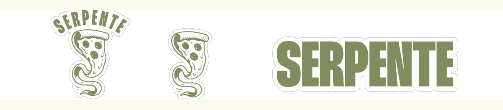
The logo combines a slice of pizza with a wavy tail. The same curve refers to three things at once: the motion of pizza dough, a stream of olive oil, and the winding road of Roztoky.
Three reasons for this design
The first idea — a literal snake — was rejected. A snake would look generic and feel disconnected from Italian food.
The curve at the bottom of the slice is a quiet reference to the road of Roztoky. The brand is tied to a real place.
The simple silhouette stays readable on a pizza box, a business card, a stamp, or a large façade sign.
The logo comes in three variants: the full lockup (text + symbol), the symbol on its own, and the wordmark in the Thunder typeface. This gives flexibility across formats and applications.
Colour palette
Olive
Off-white
Wine red
Light olive
Cream
Soft wine
Most pizzerias in the Czech market use red, yellow, or the colours of the Italian flag. Warm colours stimulate appetite — but they also make every place look the same. I chose dark olive green as the primary colour for three reasons connected directly to the restaurant.
Why olive green
Inside the restaurant stands a large green pizza oven. It is the first object guests see. The logo colour matches this real object in the space.
The serpentine road in Roztoky is surrounded by forest. Olive green visually links the brand to the local landscape.
Olive oil is on every pizza. The colour references the Mediterranean origin of the ingredients.
The wine-red accent is used in smaller doses — for menu categories, loyalty cards, and key messages. It adds emotion without dominating the system.
Typography
Extra Bold
Thunder is a tall, narrow, high-contrast display font. Its vertical energy refers directly to Italian poster and film design of the 1960s — the visual world of Fellini's La Dolce Vita. It carries the brand's emotional voice.
San Daniele ............ 320
Nduja e Melanzane ..... 295
Space Mono is a monospaced font that looks like a printed receipt or a delivery note from a small family farm. It introduces a human, slightly raw quality that supports the value of honest, craft-based cooking.
The two fonts work together as a clear hierarchy: Thunder carries emotion and identity, Space Mono handles function and clarity.
Iconography
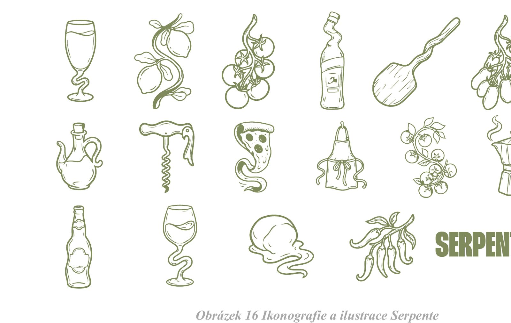
The icon set adds a playful, hand-drawn layer to the identity. Each icon shows an ingredient or a kitchen tool, and every shape includes a small wavy line — the same curve that appears in the logo. This detail visually connects every illustration back to the central idea of the brand.
Packaging
The packaging works as a mobile advertisement. Every box and bag that leaves the restaurant carries the brand into the streets of Roztoky.
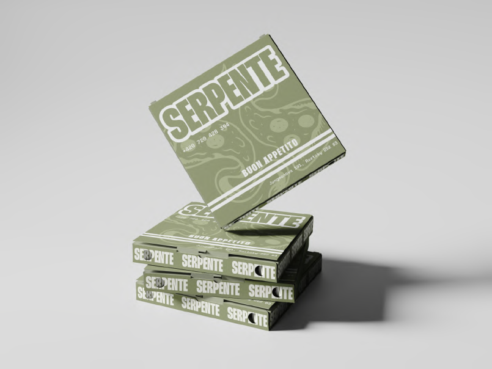
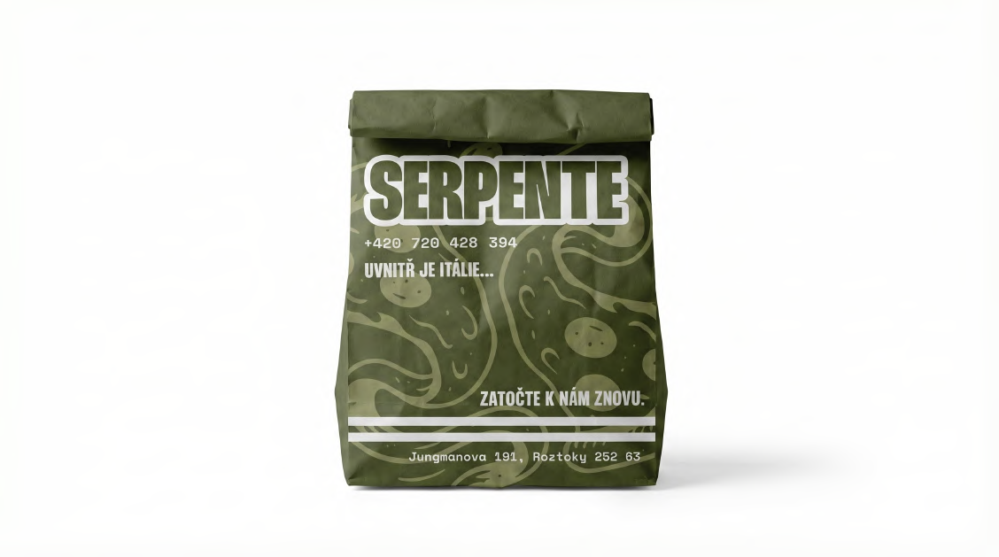
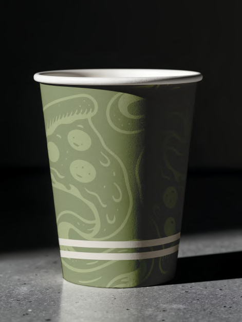
All three pieces share the same olive base, the same wavy illustration, and the same off-white horizontal lines. This consistency turns the packaging into a clearly recognisable system, not a set of separate items.
Print materials
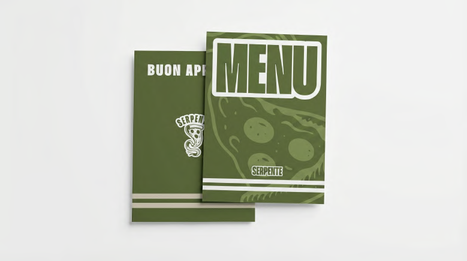
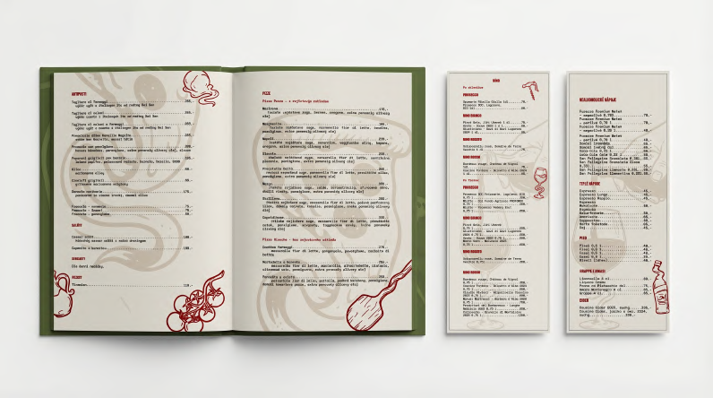
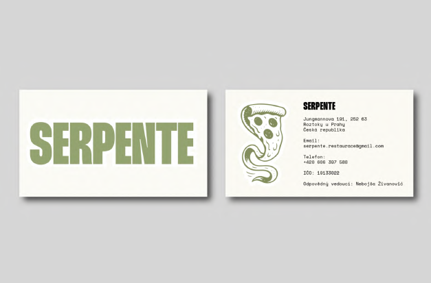
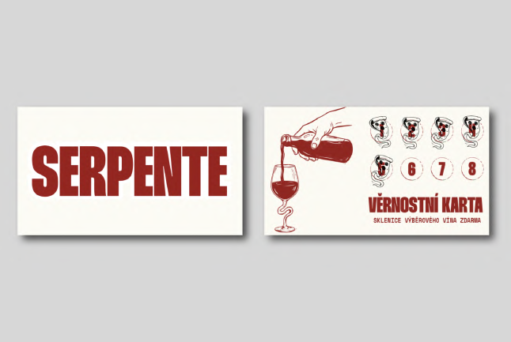
Space & people
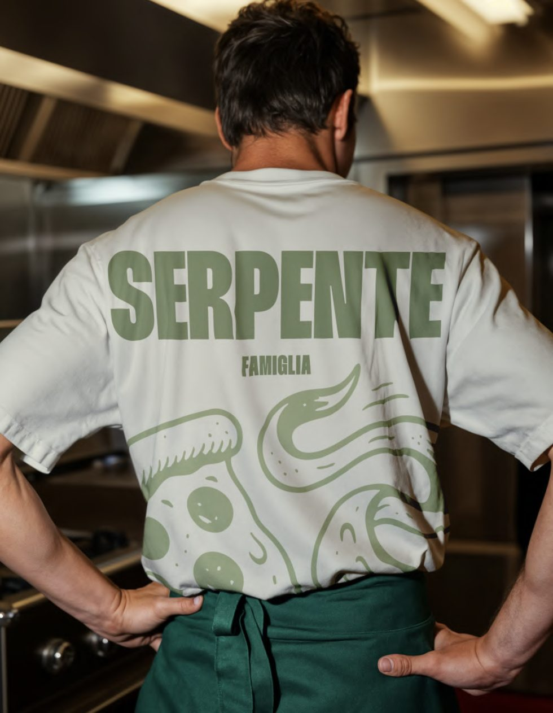
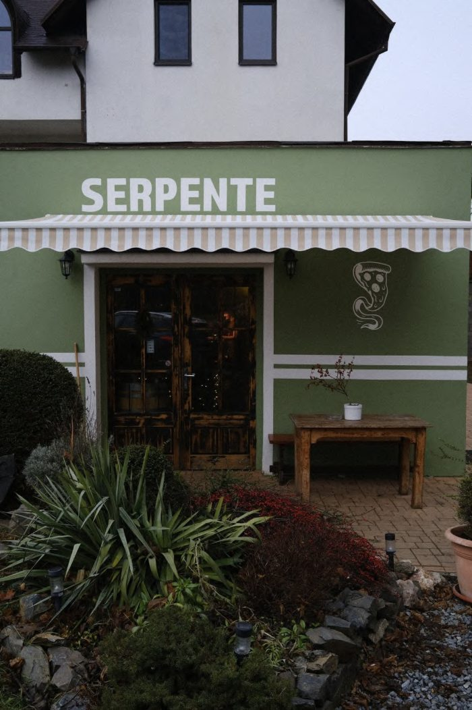
The façade uses the same olive green that runs through the entire identity. The word FAMIGLIA under the logo on the uniform reinforces the personal, human side of the brand.
Online & social
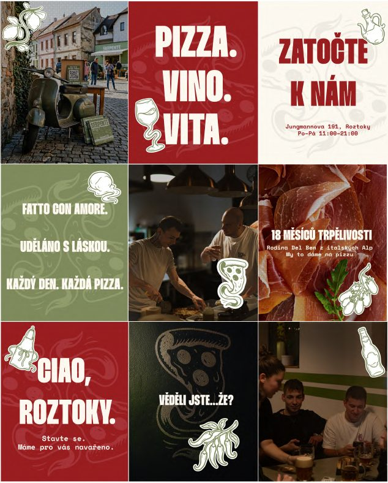
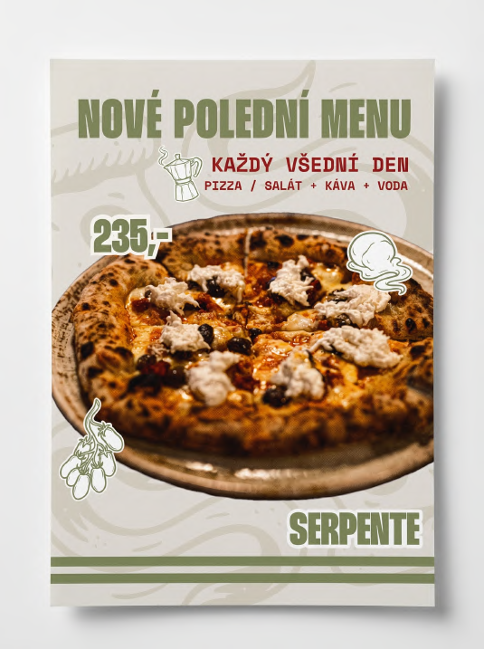
The Instagram strategy uses a halftone filter and grain texture on every photo. This adds an analogue, retro quality that visually connects the digital posts with the printed posters and menus.
Guerrilla campaign
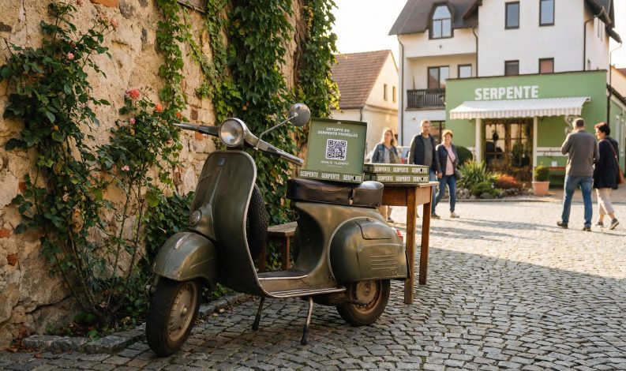
The Vespa campaign is the most experimental part of the project. An old green scooter is placed on the town square with a stack of Serpente pizza boxes on the seat. Each box contains a QR code that gives access to a hidden section of the website — an "off-menu" with seasonal specials reserved for insiders.
The campaign does not rely on discounts. It rewards curiosity with a feeling of belonging to a small community: the Serpente Famiglia.